Portfolio
Robin De Jonghe

Wat ik bijzonder fijn vond aan Werkplekleren 2, was de vrijheid en verantwoordelijkheid die we kregen binnen het project. Hierdoor heb ik veel bijgeleerd en mijn technische vaardigheden verder ontwikkeld. Daarnaast zorgde de goede samenwerking binnen ons team ervoor dat ik elke week met plezier aan het project werkte.
Wat ik minder fijn vond aan Werkplekleren 2, was dat we soms lang vastzaten op bepaalde technische problemen. Hierdoor verloren we af en toe veel tijd aan het zoeken naar oplossingen, wat soms frustrerend kon zijn. Daarnaast was het niet altijd eenvoudig om het overzicht te bewaren wanneer er meerdere taken tegelijk moesten worden afgewerkt. Toch heb ik hierdoor geleerd om geduldig te blijven en problemen stap voor stap aan te pakken.

Een belangrijk inzicht dat ik meeneem uit Werkplekleren 2 is dat je niet alles meteen moet kennen om een probleem te kunnen oplossen. Door zelfstandig informatie op te zoeken, samen te werken en door te zetten, geraak je vaak verder dan je denkt. In toekomstige projecten wil ik deze aanpak blijven toepassen en sneller initiatief nemen wanneer ik vastloop. Daarnaast heb ik geleerd dat goede communicatie en samenwerking minstens even belangrijk zijn als technische kennis.

Een persoonlijk succes tijdens Werkplekleren 2 was dat ik zowel aan de front-end als de backend heb kunnen meewerken, ook al ligt front-end mij iets beter. Ik ben er vooral trots op dat ik ook in de backend mijn rol heb opgenomen en daar nog extra in ben gegroeid. Ook de samenwerking in ons team heeft indruk gemaakt, omdat iedereen elkaar hielp en gemotiveerd bleef.
Tijdens Werkplekleren 2 merkte ik dat ik sterk ben in het afwerken en verfijnen van front-end onderdelen. Ik let veel op details zoals layout, structuur en gebruiksvriendelijkheid. Dat heb ik vooral toegepast bij het bouwen van het dashboard en de verschillende pagina’s binnen ons project. In de volgende periode wil ik dit blijven gebruiken, maar ook sneller doorwerken zonder te blijven hangen in kleine aanpassingen.
Mijn valkuil is dat ik soms te lang bezig ben met het perfectioneren van details in de front-end. Ik wil dat alles er goed uitziet en logisch voelt, waardoor ik soms te veel tijd verlies op kleine aanpassingen die niet altijd nodig zijn.
Een belangrijk verbeterpunt is leren inschatten wanneer iets “goed genoeg” is en verder gaan naar de volgende taak. Ik wil sneller beslissen wanneer iets af is en minder blijven aanpassen achteraf. Wanneer ik twijfel, kan ik beter sneller feedback vragen aan lectoren of teamgenoten zodat ik efficiënter werk.
In de volgende periode wil ik leren om mijn werk beter te plannen en minder tijd te verliezen aan kleine details. Ik wil efficiënter worden in het afwerken van taken en leren om mijn focus beter te verdelen tussen front-end en back-end.
Tijdens Werkplekleren 2 merkte ik dat ik vrij vlot kan schakelen tussen front-end en back-end taken. Dat zorgt ervoor dat ik beide kanten van het project begrijp en kan meewerken waar nodig. Vooral in situaties waar frontend en backend samenkomen, zoals het koppelen van de API, kwam dat goed van pas.
Mijn valkuil is dat ik sneller naar front-end werk neig omdat dat mij makkelijker afgaat. Daardoor pak ik backend taken minder snel spontaan op, ook al lukt dat wel wanneer ik eraan begin.
Een belangrijk verbeterpunt is om meer bewust backend taken op te nemen in plaats van automatisch voor front-end te kiezen. Door feedback tijdens het project ben ik dat al meer beginnen doen, maar in de toekomst wil ik dat verder verbeteren door meer afwisseling te zoeken en mezelf ook uit mijn comfortzone te halen.
In de volgende periode wil ik beter leren balanceren tussen front-end en back-end werk, zodat ik niet te veel in één richting blijf hangen. Zo kan ik mezelf breder ontwikkelen en flexibeler inzetten binnen een team.
Tijdens Werkplekleren 2 merkte ik dat mijn passie vooral ligt bij front-end development. Ik vind het leuk om te werken aan de opmaak en gebruikservaring van een applicatie en om direct visueel resultaat te zien van wat ik maak. In ons project voor de Red Bull Gaming Hub heb ik bijvoorbeeld veel gewerkt aan het dashboard en de login- en registratiepagina’s. Dat soort werk ligt mij het beste omdat je snel ziet wat je aan het bouwen bent en kleine aanpassingen direct een verschil maken in de uitstraling en gebruiksvriendelijkheid.
Tijdens Werkplekleren 2 probeerde ik problemen eerst altijd zelf op te lossen door te testen, op te zoeken en dingen uit te proberen. Pas wanneer ik echt vastzat en geen oplossing vond, ging ik hulp vragen aan de lectoren. Bijvoorbeeld bij bepaalde backend- of API-problemen ben ik eerst zelf blijven zoeken tot ik het niet verder kreeg, en daarna heb ik gericht feedback gevraagd. Daardoor heb ik geleerd om niet meteen op te geven, maar ook om op het juiste moment hulp in te schakelen zodat ik niet te veel tijd verlies.
Tijdens Werkplekleren 2 werkte iedereen zowel aan de front-end als de backend. Binnen het PRO-team verliep de communicatie heel vlot, waardoor we goed konden afstemmen wat er nodig was. In het begin deed iedereen vooral de taken waar hij zich het meest comfortabel bij voelde, maar na verloop van tijd zijn we ook meer taken beginnen opnemen die minder vanzelf gingen. Daardoor werd de samenwerking breder en leerden we allemaal meer bij, omdat we niet bleven hangen in één soort werk maar elkaar ook aanvulden waar nodig.
Tijdens Werkplekleren 2 heb ik zowel front-end als back-end taken uitgevoerd, waardoor ik met verschillende onderdelen van het project in contact kwam. In het begin lag mijn voorkeur vooral bij front-end, maar na verloop van tijd heb ik ook meer back-end taken opgenomen. Daardoor heb ik beter begrepen hoe beide delen met elkaar verbonden zijn en elkaar nodig hebben om een goed werkende applicatie te krijgen. Ik kan nu sneller inschatten wat er achter de schermen gebeurt wanneer ik aan de front-end werk.